Results on Real-world Dataset
| 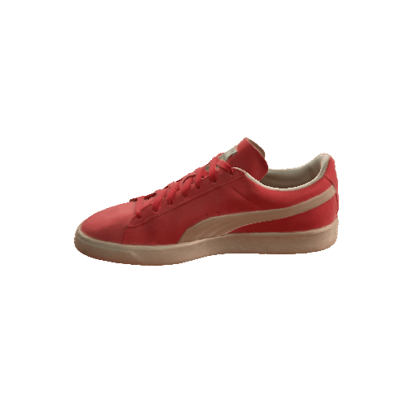 | 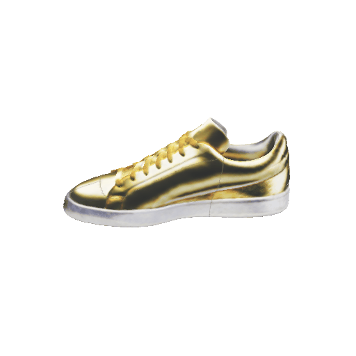 | ||
| "A vegetable toy tiger" | "A golden sneaker" | ||
| 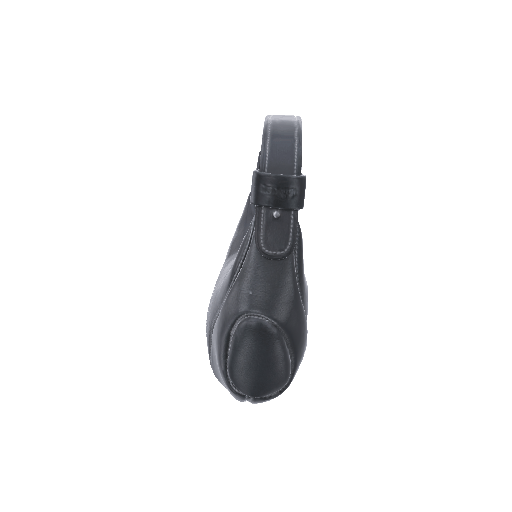 | 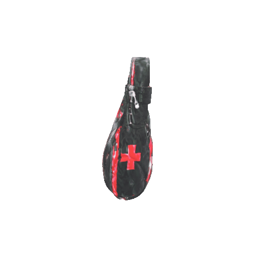 | 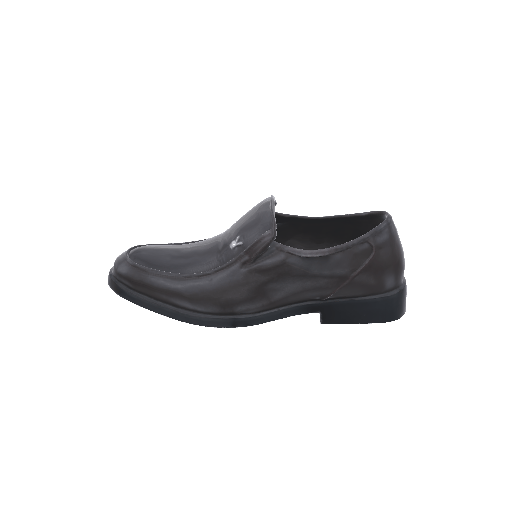 | 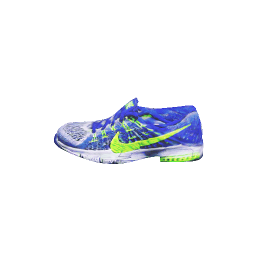 |
| "A Swiss bag" | "A Nike sneaker" | ||
| 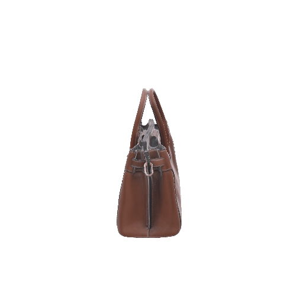 | 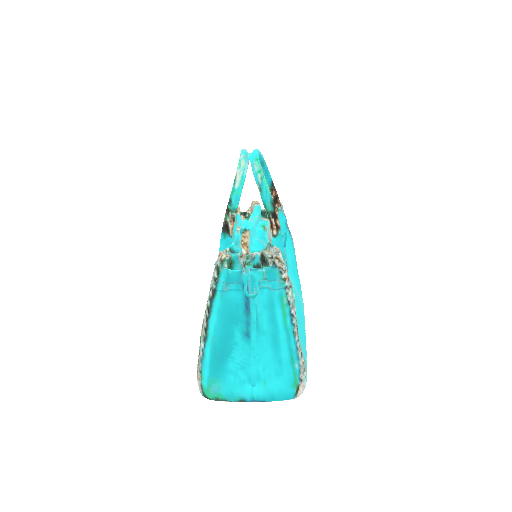 |  |
 |
| "A Tiffany blue bag" | "A pineapple-like hat" | ||
| 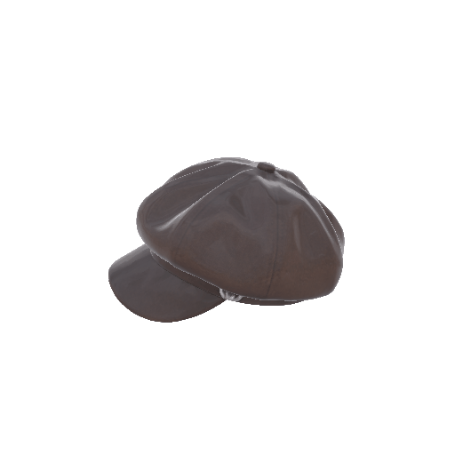 | 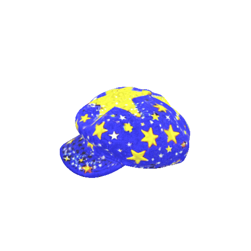 | 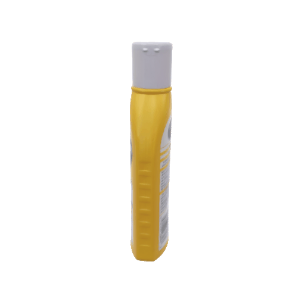 | 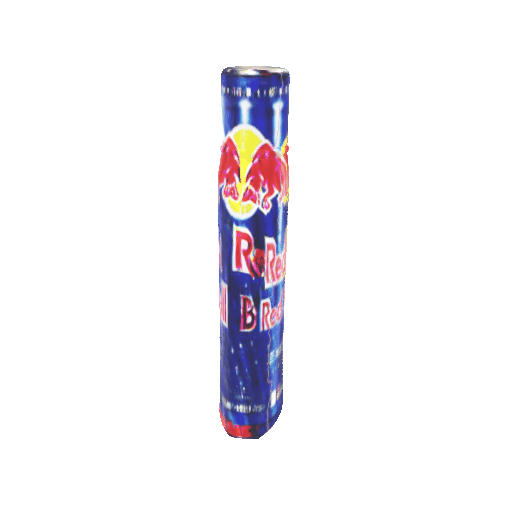 |
| "A cap with stars on it" | "A Red Bull energy drink" | ||
| 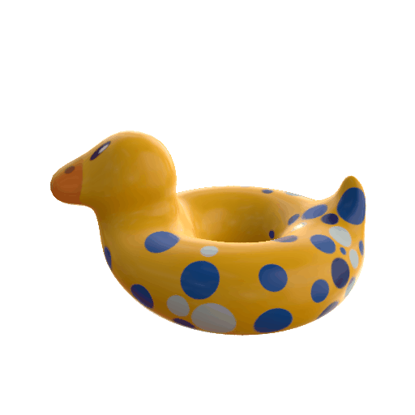 |  |
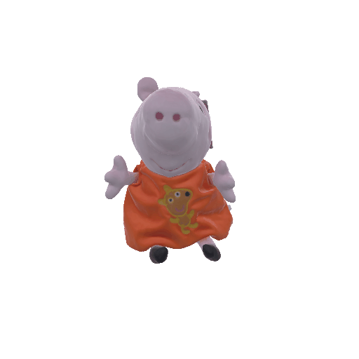 | 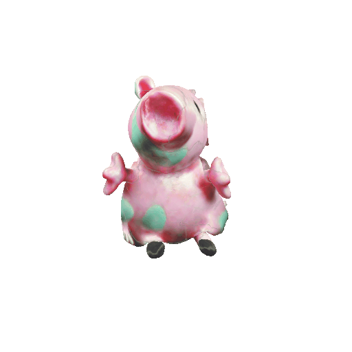 |
| "A Mallard" | "A pink porcelain piggy toy" | ||
BibTeX
@article{liu2023item3d,
title={ITEM3D: Illumination-Aware Directional Texture Editing for 3D Models},
author={Liu, Shengqi and Chen, Zhuo and Gao, Jingnan and Yan, Yichao and Zhu, Wenhan and Li, Xiaobo and Gao, Ke and Lyu, Jiangjing and Yang, Xiaokang},
journal={arXiv preprint arXiv:2309.14872},
year={2023}
}